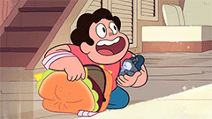
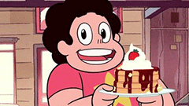
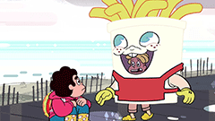
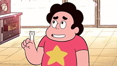

A team of intergalactic warriors fights to protect the Earth, but the combination
of three highly trained beings and one quirky young boy leaves the team struggling
to overcome the dangerous scenarios that are put in front of them.
Steven believes his favourite discontinued ice cream treat is the key to summoning his magic shield, and he tests his theory
against a giant monster.
Laser Light Cannon
As a gem comet hurtles towards Beach City, Steven enlists his dad's help. He needs to find a weapon which his mother left behind
in order to destroy the comet and save the town and everyone in it.

Cheeseburger Backpack
A mission to the Lunar Sea Spire takes a treacherous turn, but luckily for the mission Steven has packed his totally amazing
cheeseburger backpack with everything that he could ever need.

Together Breakfast
Things go wrong when Steven tries to get the Gems to take part in his special breakfast tradition and he finds himself tumbling
through the magical catacombs of the Crystal Gems temple.

Frybo
Steven brings the mascot costume Frybo to horrifying life using a Gem shard. The mascot listens to Steven's every command and he
asks him to help a boy with his gruelling job peddling French fries.

Cat Fingers
Steven makes a mistake while trying to master his shapeshifting abilities, transforming his fingers each into a tiny adorable cat head.
Steven needs to rid himself of the feline friends before they take over his body.